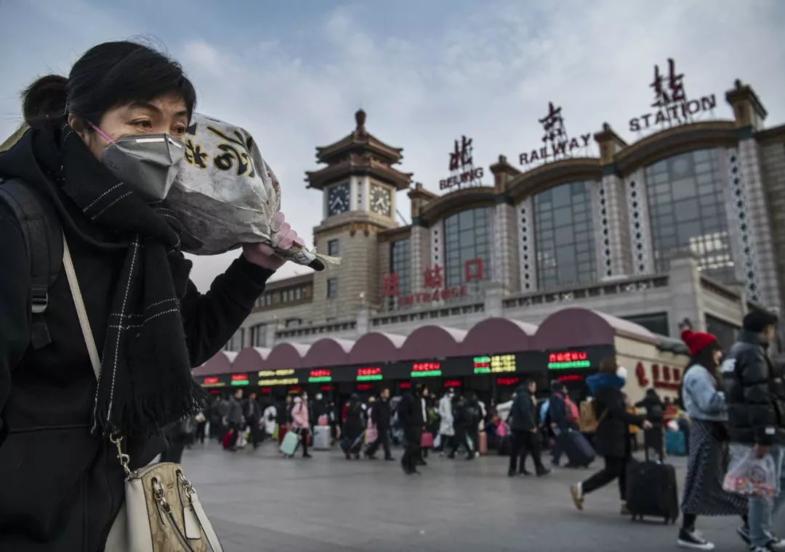

肺炎日记 | 1月23日：武汉全面“封城”，全力遏制疫情
原文链接 备份链接 【财新网】（记者 黄蕙昭）一则半夜发布的“封城”通告惊动全国，也拉开武汉肺炎防疫之战新势态。1月23日凌晨两点，武汉市新型冠状病毒感染的肺炎疫情防控指挥部通报宣布，今日10时起，武汉公交、地铁、轮渡、长途客运暂停运 …

口述 | 许平
记者 | 王珊
从2019年12月31日到现在，我所在医院的病人越来越多了，以发热门诊为例，目前每天病人的体量已经是医院平常病人数的10多倍，我们医院还在距离市中心比较偏的医院。冬季本身就是流感高发季，容易出现发热和呼吸道感染等问题。这群病人里有流感病人、普通感冒患者。当然，也有一部分是新型冠状病毒感染者。不过，很多患者现在都还没被检验。以往流感、感冒病人可能会去呼吸科或者儿科看病，现在都聚集到了发热门诊，所以人流量很大。

汉口火车站外
如今，各个医院的床位已经爆满了，救治能力到了极限。作为医院，我们的任务是诊断和收治疑似病人，确诊则是由武汉疾控部门负责。我们都知道新型冠状病毒的检测已经有试剂盒。这两天武汉卫生系统将检测的权限下放给了三甲医院，即试剂盒发到医院。有些医院是试剂盒不够用，有些医院则没有检验的条件。
新型冠状病毒按甲类传染病进行防控，检验需要有专门的实验室。即使一些三甲医院，也没有这样的实验室，现在建也来不及。它首先需要一个负压实验室，气流只能进不能出；实验室的洁净度、通风系统、消毒灭菌都有很高的要求。如果不具备条件去做检验，很可能会出现病毒泄漏的情况，实验室成了污染源，医院也就被污染了，很可怕。
现在回想卫生系统应对新型冠状病毒的过程，有很多需要思考的地方。实际上，一开始，整个形势都是可控的。新型病毒最先在武汉出现时，是由武汉卫生系统自己监测到的。2019年12月31日，武汉卫健委就通报，发现27例感染者。那时大家还不知道这种新型肺炎是什么东西。发现之后，他们对这些患者也进行了严格的隔离。1月9日，专家们就确认了病毒是什么，两天后，病毒的基因测序也做完了。这从应对上来说是非常迅速的。你想武汉市有1100多万人口，出现了20多例病例，在流感严重的背景确认一种新型的肺炎，是不容易的。这是需要肯定的地方。
问题出现在后面。27例病例出现后，武汉卫生系统采取了内紧外松的政策。“紧”是及时发现病例，并做了严格的隔离和应对。“松”则是却没有大范围地公告社会，让大家对疾病提起警惕，也没有号召大家戴口罩。这次，系统内部没有意识到控制这样性质的传染性疾病，如果没有社会面的支持，是很难的。
社会支持包括什么？首先要号召公众停止人员的大规模流动，不要有大规模的聚会，戴口罩、洗手这些也需要提醒。应对新型冠状病毒不是卫生系统一方力量能做成的。你想一下，老百姓没有意识到事情重要性和严重程度，大家就会放松警惕，也才会出现后面四万人吃家宴的事情。**这种意识缺乏的状态会一直延续到发病期，即人是生病了，但对方觉得不严重，也不会来医院。
**

正值中国南方农历小年，武汉百步亭社区四万人吃家宴（中新社供图）
这也跟疾病的特点有关系。新型冠状病毒攻击的靶点是血管紧张素转化酶（ACE）。这个东西丰富地存在于肺部。因此，被感染者最初表现出来的症状不是非常严重。我们知道流感患者会出现发烧、流涕、干咳、咳痰。新型冠状病毒的感染者最初可能只是没有力气而已，干咳或者低烧，甚至有的人体温就比正常高一点点，测温都测不出来的。也有些人还处在潜伏期，没有任何表现。新型冠状病毒在某些方面跟SARS有些相似，但表现出来的症状看起来又比SARS轻，所以就有了忽视。但，不严重并不代表没有传染性。
现在看来，这可能是疫情扩大的关键点。新型冠状病毒与SARS不同的部分，恰恰是它比较快传播的因素。后续的病人突然增多，跟发病状况不严重的患者或者病毒潜伏的患者是有关系的。我们第一波发现的病人因为市场感染，但到了第二波，病人就跟市场没有关系了。所以，如果一开始，患者症状很重，病毒变异得也很快，在应对上，大家可能就是另一种态度。回头想来，这个病毒比非典还难琢磨，它飘忽不定，在有的病人身上表现很轻的症状，而如果病人不住院，继续传播，他传播的人可能又是很重的病症。
某些程度上来说，这次的大意应对跟武汉没有吃过SARS的亏也有关系。2003年非典，武汉的病例很少，几乎没有什么影响。你看北京和香港，当年非典这么严重，这次就非常重视。**我刚开始跟身边的医生朋友沟通时，他们对这个事情也不是特别放在心上。
**

我所在医院的呼吸科门诊，从12月31日开始，防护等级其实是做的比较高的。但我们医院其他科室，客观讲，那时防护力量并不到位。有些病人因为其他症状进来，病情也在潜伏期，完全看不来他有问题，在接触的过程中，就出现了感染医护人员的情况。在此之后，我们医院也做了非常严格的防护。就连后勤部门，都戴口罩，每天量体温，做防护。
我是武汉人，却对非典有着深刻的印记。当时我在北京读书，我们学校封了三个月。学校里也是禁止流动的。我们每个人发了一个牌，去了这个食堂吃饭，就不能去另外一个食堂，寝室之间也不能串门，一切目的都是为了防止出现感染。那时，我看了很多网络上各种关于非典的信息，觉得很可怕。这次病毒到来，我从一开始就很焦虑，我劝说我的家人，他们依然不是很在意。前两天，国家卫健委专家组的专家不是被感染了吗？他当时防护很好但还是倒下了。这让我的家人，包括社会上的人群开始重视起来了，觉得这是个事情了，要重视了。

医务人员身着防护服接诊（中新社供图）
2020年1月10日对武汉或者是各家医院来说都是一个节点。在此之前，跟华南市场有接触且发病的病患都已经做了隔离应对措施。没有想到的是，潜在的传染者开始不断发病，在1月20号，武汉通报两日之内新增100多个病例，这其实是潜在的传染者传染了新的人。在我们看来，这个时间段代表着第二波爆发期的到来。这个时候，我们前面说检验手段已经出来了。但有些医院即使有试剂，也架不住患者那么多，只能对于严重的患者优先进行确诊检测，病情轻的先不检测，让他们回家。
这跟SARS后面的应对是不同的。那时，即使没有检测手段，医生可以根据病人的流行病史和病症进行判断，对于疑似病例进行隔离。这次没有做到，很多疑似症状的患者回了家。有的医院这段时间收到了病人的投诉。说医院不给他看病。但事实上，这位患者先去了一个医院，他看到人多，就换到另外一个医院，结果排队也很长，再换医院。现在医院的发热门诊、呼吸科门诊，基本都要排队四五个小时。这样的患者如果后面确诊为新型肺炎，很有可能就会传染更多的人。他来回医院乘坐公共交通工具的话，也是很大的一个风险。不得不说，我们对疾病的认识是不足的。
从昨天起，卫生部门决定对发热患者进行定点医院集中诊治，这是好的方法。就像之前北京的小汤山，可以防止患者的流动，我希望能看到好的效果。其实，如果看规律，2003年非典和现在的出现的新型冠状病毒，都是出现在大的交通节点城市，人口密度大。**武汉这次疫情最厉害的两个区，也是人口密度都极高，每平方公里好几万人。
**

病毒的传播是跟人口密度有很大关系的。我们认为大爆发期还没有到。最危险的时候是春节之后，大家返回去上班，人员往一线城市汇聚，到了人口更密集的地区。这几天大家都看到专家的那句呼吁，“能不到武汉去就不去，武汉人能不出来就不出来”。其实刚开始我们就听到传言说要封锁整个武汉，没想到今天真封了。
我们自己判断，新型冠状病毒的传播情况可能要一直延续到5月，判断源于两个事实：一方面是防控手段不断跟上，另一方面新型冠状病毒怕热，等天气热起来了，也能对病毒起到作用。我们现在心里做了要到五一的准备。这个时候，我想说，作为武汉人，我们的家乡在这里，事业在这里，我们想保护这个城市。
_（许平为化名）
_
#我在疫情一线#
话题征稿持续进行中
《三联生活周刊》全媒体现面向所有读者征稿。所有身在疫情一线、了解疫情的读者或媒体同行们，我们想要征集你们身边已经发生的、正在发生的那些尚未被媒体采集到的疫情故事。此次征稿形式不限：文字（1500～2500字为佳）、图片（原创拍摄）、音频视频（原创录制）都欢迎。大家携手，共度难关！注：请务必保证故事真实、客观，不造谣、不传谣。
《三联生活周刊》微信公号投稿邮箱：zhuangao@lifeweek.com.cn来稿格式：#我在疫情一线#➕标题《三联生活周刊》官方微博参与话题：#我在疫情一线#《三联生活周刊》中读APP投稿邮箱（音频投稿为主，5分钟以内为佳）zhongdu@lifeweek.com.cn
期待你的来稿！
⊙文章版权归《三联生活周刊》所有，欢迎转发到朋友圈，转载请联系后台。
点击下图，一键下单「*年里美味***」
**
买它！

▼ 点击阅读原文，进入周刊书店，购买更多好书。
小笨王珊
微信扫一扫赞赏作者 赞赏
长按二维码向我转账
受苹果公司新规定影响，微信 iOS 版的赞赏功能被关闭，可通过二维码转账支持公众号。
文章已于修改
原文链接 备份链接 【财新网】（记者 黄蕙昭）一则半夜发布的“封城”通告惊动全国，也拉开武汉肺炎防疫之战新势态。1月23日凌晨两点，武汉市新型冠状病毒感染的肺炎疫情防控指挥部通报宣布，今日10时起，武汉公交、地铁、轮渡、长途客运暂停运 …
原文链接 备份链接 新型冠状病毒感染肺炎疫情扩大。武汉本地两天新增确诊136例，死亡1例，治愈出院6例。 北京大兴区新增2例，有武汉旅行史；广东深圳新增1例，曾到武汉探亲。这是内地首次在武汉之外的城市报告病例。 国家卫健委卫生应急办 …
原文链接 备份链接 其他科室要尽量把医用口罩和防护服留给隔离病房的医护人员使用 2020年1月22日，在湖北省政府首场新型冠状病毒感染肺炎疫情防控工作新闻发布会上公布，新型冠状病毒感染的肺炎已致湖北17人死亡。图/新华 文 |《财经》 …
原文链接 备份链接 作者 | 第一财经 吴绵强 周芳 陈益刊 编辑 | 张富贵 为了遏制新型冠状病毒感染的肺炎扩散，按照武汉市新型冠状病毒感染的肺炎疫情防控指挥部通告，自1月23日10时起，武汉全市城市公交、地铁、轮渡、长途客运暂停运营； …
原文链接 备份链接 记者/韩谦 魏晓涵 李佳楠 张帆 颜星悦 佟晓宇 梁婷 李东 郭慧敏 实习记者/陈威敬 龙天音 编辑/杨宝璐 宋建华 被确诊为河南省首例新型冠状病毒感染的肺炎患者，曾于1月8日在太康县人民医院治疗 国家卫健委消息，截 …